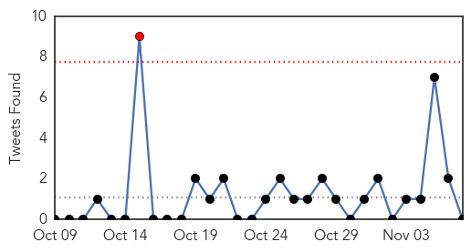

30 Day Trends
Web: 0 alerts, 0 warnings
Twitter: 1 alerts, 0 warnings
Top Articles:
- 0.955
- Oregon school pumpkin carving party suspected in norovirus outbreak — Health — Bangor Daily News — BDN Maine
- 0.906
- Last year's enterovirus D68 outbreak more widespread than first thought
- 0.842
- How An ASHA Worker Is Spreading Awareness
- 0.797
- Victims of severe side effects call for removal of HPV vaccine
- 0.730
- Emails from Paris Kosher store gunman to ‘handler’ revealed
- 0.727
- Why I wear a remembrance poppy: The story of Private John O’Leary
- 0.707
- Leaders of Taiwan and China hold historic talks
- 0.707
- Russia to send fleet of planes to Egypt to bring home tourists
- 0.702
- Kremlin slams Charlie Hebdo cartoons on Russian air crash
- 0.702
- Burma prepares for first free elections in 25 years
- 0.664
- Malaria Outbreak Hits Karoi
- 0.660
- Longreads: 5 Diseases You Didn't Know to Worry About
- 0.654
- A game-changer for LGBT health
- 0.640
- More than 700 get surgery in health camp
- 0.614
- Pet cat from Chimacum area found to have rabies; discovery marks first time in state since 2002 -- Port Angeles Port Townsend Sequim Forks Jefferson County Clallam County Olympic Peninsula Daily news
- 0.610
- 14 lose eyesight after botched cataract surgery in Maharashtra
- 0.603
- Update: Montague Center boil order lifted
- 0.581
- Thirteen injured in Colectiv fire die during the weekend, DNA makes arrests
- 0.581
- Thirteen injured in Colectiv fire die during the weekend, DNA makes arrests
- 0.581
- Thirteen injured in Colectiv fire die during the weekend, DNA makes arrests
- 0.579
- A FAILING HEALTH CARE SYSTEM
- 0.575
- GreyHeart launches home based Medicare
- 0.555
- Stop the violence. Protect health care
- 0.507
- Health Audit report does not support Shaw's claim of infection at Cornwall in July
Top Tweets:
-
No tweets found for Nov 07, 2015
Web/News Articles

Tweets
Article Locations

Article Confidences